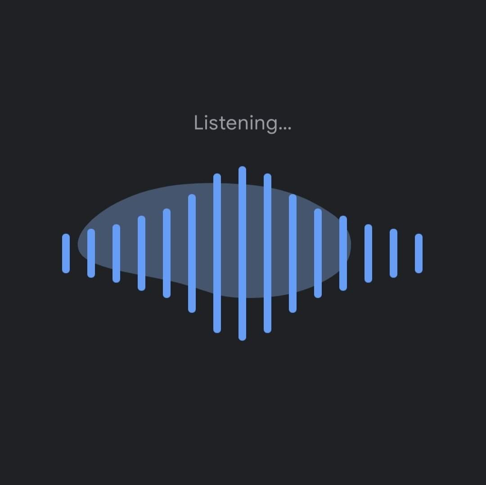

Google Sound Search
ഒരു ഫങ്ഷനോ മറ്റോ പോകുമ്പോ അത്ര പരിചയം ഇല്ലാത്ത ഏതെങ്കിലും നല്ലൊരു പാട്ട് കേട്ടാൽ ഫോണിനെ അത് കേൾപ്പിച്ച് ഏതാണെന്ന് identify ചെയ്യാനും സെർച്ച് ചെയ്തു ഡൌൺലോഡ് ചെയ്യാനും helpful ആയ നല്ലൊരു app ആണ് Shazam. ഇപ്പോളും ഏറ്റവും പ്രീയപ്പെട്ട ആപ്പുകളുടെ ലിസ്റ്റിൽ Shazam ഉണ്ട്. ❤️
എന്നാൽ, Google Sound Search ന്റെ ഈയിടെ വന്ന updation വേറെ ലെവൽ ആയിരുന്നു...
Original song ന്റെ ഭാഗം തന്നെ കേൾപ്പിച്ചു കൊടുക്കുന്നതിനു പകരം, നമ്മൾ തന്നെ ഒരു പാട്ടിന്റെ ഏതെങ്കിലും 4 വരി പാടുകയോ (പാടാൻ അറിയണം എന്നില്ല, ട്യൂൺ ഏകദേശം ഒത്തു വന്നാൽ മതി) ലിറിക്സ് അറിയാത്ത പാട്ട് മൂളുകയോ ചെയ്താൽ സേർച്ച് ചെയ്ത് കണ്ടുപിടിച്ചു തരും!!!! 🔥🔥🔥
NB: പവിഴ മഴയേ എന്നൊക്കെ പാടിയിട്ട് പിന്നെ ഫേസ്ബുക്ക് ന്യൂസ് ഫീഡിൽ പവിഴം നല്ലെണ്ണയുടെ ad വന്നാൽ ഞാൻ ഉത്തരവാദി ആയിരിക്കുന്നതല്ല.
Google sound search shortcut ഫോണിലെ Quick settings tiles ൽ ഉണ്ടാവും, ഇല്ലെങ്കിൽ home screen ൽ ഞെക്കി പിടിച്ചു widgets ആഡ് ചെയ്യാനുള്ള ഓപ്ഷൻ എടുക്കുക, അതിൽ കാണിക്കും. അതുമല്ലെങ്കിൽ ഗൂഗിൾ അസിസ്റ്റന്റിനോട് Identify this song എന്നു പറയുക. (Google app updated ആവണം)
DeOn